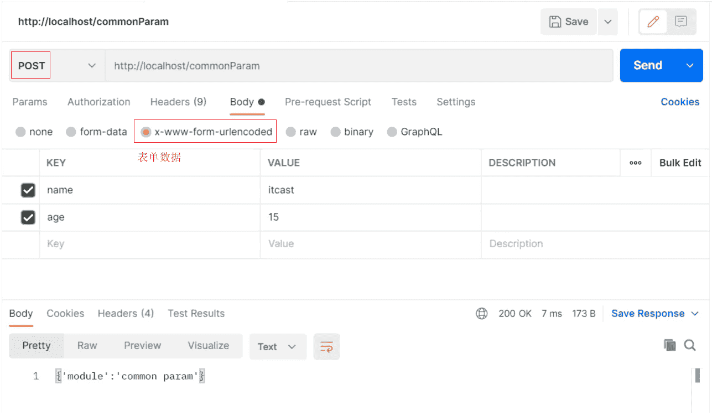
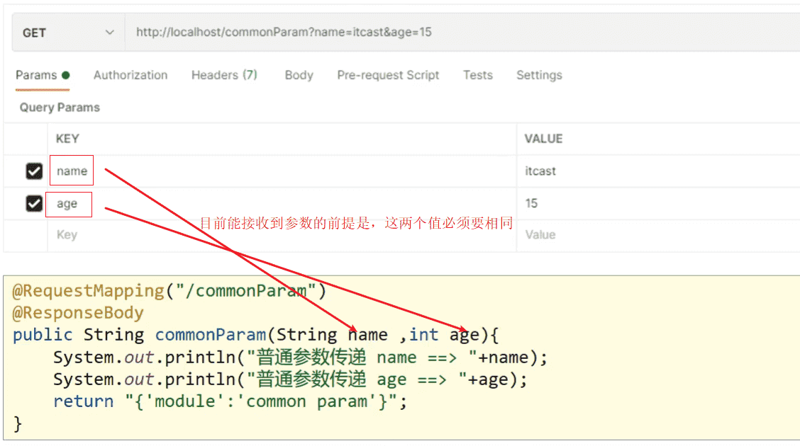
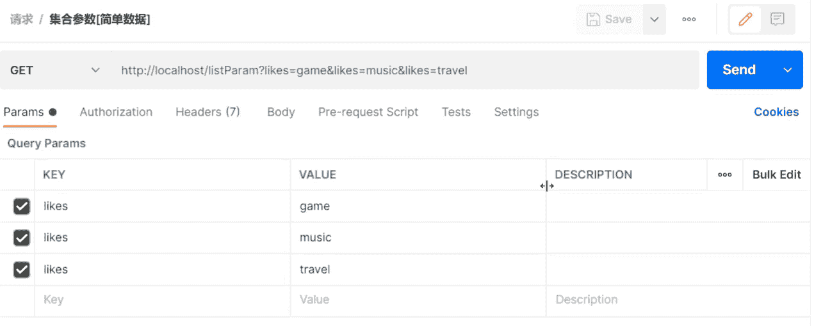
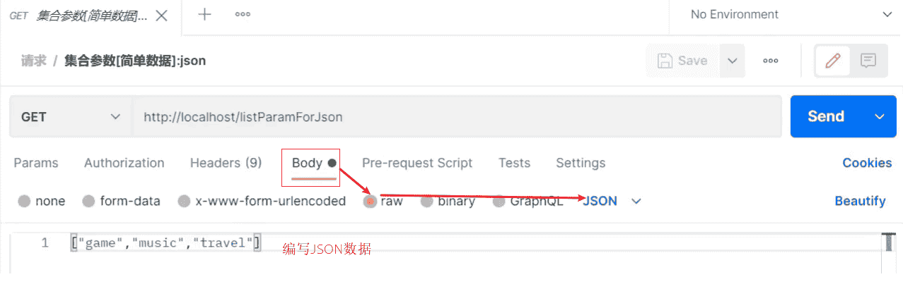
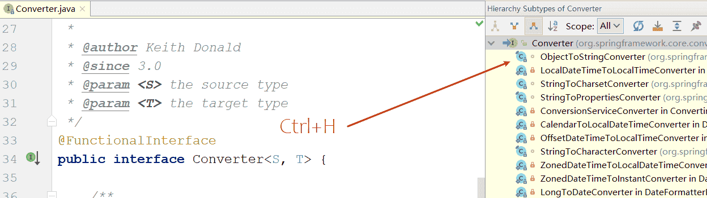

SpringMVC请求数据和响应数据
1. 请求与响应
前面已经完成了SpringMVC入门案例知识学习，接下来了就需要针对SpringMVC相关的知识点进行系统的学习，之前提到过，SpringMVC是web层的框架，主要的作用是接收请求、接收数据、响应结果，所以这一章节是学习SpringMVC的重点内容，主要会讲解四部分内容:
- 请求映射路径
- 请求参数
- 日期类型参数传递
- 响应json数据
1.1 设置请求映射路径
1.1.1 环境准备
-
创建一个Web的Maven项目
-
pom.xml添加Spring依赖
1
2
3
4
5
6
7
8
9
10
11
12
13
14
15
16
17
18
19
20
21
22
23
24
25
26
27
28
29<dependencies>
<dependency>
<groupId>javax.servlet</groupId>
<artifactId>javax.servlet-api</artifactId>
<version>3.1.0</version>
<scope>provided</scope>
</dependency>
<dependency>
<groupId>org.springframework</groupId>
<artifactId>spring-webmvc</artifactId>
<version>5.2.10.RELEASE</version>
</dependency>
</dependencies>
<build>
<plugins>
<plugin>
<groupId>org.apache.tomcat.maven</groupId>
<artifactId>tomcat7-maven-plugin</artifactId>
<version>2.1</version>
<configuration>
<port>80</port>
<path>/</path>
</configuration>
</plugin>
</plugins>
</build>
</project> -
创建对应的配置类
1
2
3
4
5
6
7
8
9
10
11
12
13
14
15
16
17public class ServletContainersInitConfig extends AbstractAnnotationConfigDispatcherServletInitializer {
protected Class<?>[] getServletConfigClasses() {
return new Class[]{SpringMvcConfig.class};
}
protected String[] getServletMappings() {
return new String[]{"/"};
}
protected Class<?>[] getRootConfigClasses() {
return new Class[0];
}
}
public class SpringMvcConfig {
} -
编写BookController和UserController
1
2
3
4
5
6
7
8
9
10
11
12
13
14
15
16
17
18
19
20
21
22
23
24
25
26
27
28
public class UserController {
public String save(){
System.out.println("user save ...");
return "{'module':'user save'}";
}
public String delete(){
System.out.println("user delete ...");
return "{'module':'user delete'}";
}
}
public class BookController {
public String save(){
System.out.println("book save ...");
return "{'module':'book save'}";
}
}
最终创建好的项目结构如下:
1 | springmvc_03_request_mapping |
把环境准备好后，启动Tomcat服务器，后台会报错:
1 | com.itheima.controller.UserController#save() |
从错误信息可以看出:
- UserController有一个save方法，访问路径为
http://localhost/save - BookController也有一个save方法，访问路径为
http://localhost/save - 当访问
http://localhost/saved的时候，到底是访问UserController还是BookController?
1.1.2 问题分析
团队多人开发，每人设置不同的请求路径，冲突问题该如何解决?
解决思路:为不同模块设置模块名作为请求路径前置
对于Book模块的save,将其访问路径设置http://localhost/book/save
对于User模块的save,将其访问路径设置http://localhost/user/save
这样在同一个模块中出现命名冲突的情况就比较少了。
1.1.3 设置映射路径
步骤1:修改Controller
1 |
|
问题是解决了，但是每个方法前面都需要进行修改，写起来比较麻烦而且还有很多重复代码，如果/user后期发生变化，所有的方法都需要改，耦合度太高。
步骤2:优化路径配置
优化方案:
1 |
|
注意:
- 当类上和方法上都添加了
@RequestMapping注解，前端发送请求的时候，要和两个注解的value值相加匹配才能访问到。 - @RequestMapping注解value属性前面加不加
/都可以
| 名称 | @RequestMappering |
|---|---|
| 类型 | 方法注解、类注解 |
| 作用 | 设置当前控制器方法请求访问路径，如果设置在类上，则统一设置当前控制器方法请求访问路径前缀 |
扩展小知识:
对于PostMan如何觉得字小不好看，可以使用ctrl+=调大，ctrl+-调小。
1.2 请求参数
请求路径设置好后，只要确保页面发送请求地址和后台Controller类中配置的路径一致，就可以接收到前端的请求，接收到请求后，如何接收页面传递的参数?
关于请求参数的传递与接收是和请求方式有关系的，目前比较常见的两种请求方式为：
- GET
- POST
针对于不同的请求前端如何发送，后端如何接收?
1.2.1 环境准备
-
创建一个Web的Maven项目
-
pom.xml添加Spring依赖
1
跟前面的pom.xml配置一样，参考前面的
-
创建对应的配置类
ServletContainersInitConfig1
跟前面的ServletContainersInitConfig配置一样，参考前面的
-
编写UserController
1
2
3
4
5
6
7
8
9
public class UserController {
public String commonParam(){
return "{'module':'commonParam'}";
}
}
-
编写模型类，User和Address
1
2
3
4
5
6
7
8
9
10public class Address {
private String province;
private String city;
//setter...getter...略
}
public class User {
private String name;
private int age;
//setter...getter...略
}
最终创建好的项目结构如下:
1 | springmvc_03_request_param |
1.2.2 参数传递
GET发送单个参数
发送请求与参数:
1 | http://localhost/commonParam?name=itcast |
接收参数：
1 |
|
GET发送多个参数
发送请求与参数:
1 | http://localhost/commonParam?name=itcast&age=15 |
接收参数：
1 |
|
GET请求中文乱码
如果传递的参数中有中文，你会发现接收到的参数会出现中文乱码问题。
发送请求:http://localhost/commonParam?name=张三&age=18
控制台:
1 | 普通参数传递 name ==> å¼ ä¸ |
出现乱码的原因相信大家都清楚，Tomcat8.5以后的版本已经处理了中文乱码的问题，但是IDEA中的Tomcat插件目前只到Tomcat7，所以需要修改pom.xml来解决GET请求中文乱码问题
1 | <build> |
POST发送参数
使用postman发送请求与参数:
接收参数：
和GET一致，不用做任何修改
1 |
|
POST请求中文乱码
发送请求与参数:
1 | name=黑马程序员 |
接收参数:
控制台打印，会发现有中文乱码问题。
1 | 普通参数传递 name ==> é»é©¬ç¨åºå |
解决方案:配置过滤器
1 | public class ServletContainersInitConfig extends AbstractAnnotationConfigDispatcherServletInitializer { |
CharacterEncodingFilter是在spring-web包中，所以用之前需要导入对应的jar包。
1.3 五种类型参数传递
前面已经能够使用GET或POST来发送请求和数据，所携带的数据都是比较简单的数据，接下来在这个基础上，来研究一些比较复杂的参数传递，常见的参数种类有:
- 普通参数
- POJO类型参数
- 嵌套POJO类型参数
- 数组类型参数
- 集合类型参数
这些参数如何发送，后台改如何接收?一个个来学习。
1.3.1 普通参数
- 普通参数:url地址传参，地址参数名与形参变量名相同，定义形参即可接收参数。

如果形参与地址参数名不一致该如何解决?
发送请求与参数:
1 | http://localhost/commonParamDifferentName?name=张三&age=18 |
后台接收参数:
1 |
|
因为前端给的是name,后台接收使用的是userName,两个名称对不上，导致接收数据失败:
1 | 普通参数传递 userName ==> null |
解决方案:使用@RequestParam注解
1 |
|
注意:写上@RequestParam注解框架就不需要自己去解析注入，能提升框架处理性能
1.3.2 POJO数据类型
简单数据类型一般处理的是参数个数比较少的请求，如果参数比较多，那么后台接收参数的时候就比较复杂，这个时候可以考虑使用POJO数据类型。
- POJO参数：请求参数名与形参对象的属性名相同，定义POJO类型形参即可接收参数
此时需要使用前面准备好的POJO类，先来看下User
1 | public class User { |
使用postman发送GET请求和参数:
1 | name=itcast |
后台接收参数:
1 | //POJO参数：请求参数与形参对象中的属性对应即可完成参数传递 |
控制台输出：
1 | pojo参数传递 user ==> User{name='itcast', age=15} |
注意:
- POJO参数接收，前端GET和POST发送请求数据的方式不变。
- 请求参数key的名称要和POJO中属性的名称一致，否则无法封装。
1.3.3 嵌套POJO类型参数
如果POJO对象中嵌套了其他的POJO类，如
1 | public class Address { |
- 嵌套POJO参数：请求参数名与形参对象属性名相同，按照对象层次结构关系即可接收嵌套POJO属性参数
postman发送GET请求和参数:
1 | http://localhost/pojoParam?name=itcast&age=15&address.city=beijing&address.province=beijing |
后台接收参数:
1 | //POJO参数：请求参数与形参对象中的属性对应即可完成参数传递 |
控制台输出：
1 | pojo参数传递 user ==> User{name='itcast', age=15, address=Address{province='beijing', city='beijing'}} |
注意:
请求参数key的名称要和POJO中属性的名称一致，否则无法封装
1.3.4 数组类型参数
举个简单的例子，如果前端需要获取用户的爱好，爱好绝大多数情况下都是多个，如何发送请求数据和接收数据呢?
- 数组参数：请求参数名与形参对象属性名相同且请求参数为多个，定义数组类型即可接收参数
postman发送GET请求和参数:
1 | http://localhost/arrayParam?likes=game&likes=music&likes=travel |
后台接收参数:
1 | //数组参数：同名请求参数可以直接映射到对应名称的形参数组对象中 |
控制台输出：
1 | 数组参数传递 likes ==> [game, music, travel] |
1.3.5 集合类型参数
数组能接收多个值，那么集合是否也可以实现这个功能呢?
发送请求和参数:

后台接收参数:
1 | //集合参数：同名请求参数可以使用@RequestParam注解映射到对应名称的集合对象中作为数据 |
运行会报错，
错误的原因是:SpringMVC将List看做是一个POJO对象来处理，将其创建一个对象并准备把前端的数据封装到对象中，但是List是一个接口无法创建对象，所以报错。
解决方案是:使用@RequestParam注解
1 | //集合参数：同名请求参数可以使用@RequestParam注解映射到对应名称的集合对象中作为数据 |
- 集合保存普通参数：请求参数名与形参集合对象名相同且请求参数为多个，@RequestParam绑定参数关系
- 对于简单数据类型使用数组会比集合更简单些。
知识点1：@RequestParam
| 名称 | @RequestParam |
|---|---|
| 类型 | 形参注解 |
| 位置 | SpringMVC控制器方法形参定义前面 |
| 作用 | 绑定请求参数与处理器方法形参间的关系 |
| 相关参数 | required：是否为必传参数 defaultValue：参数默认值 |
1.4 JSON数据传输参数
前面说过，现在比较流行的开发方式为异步调用。前后台以异步方式进行交换，传输的数据使用的是JSON,所以前端如果发送的是JSON数据，后端该如何接收?
对于JSON数据类型，常见的有三种:
- json普通数组（[“value1”,“value2”,“value3”,…]）
- json对象（{key1:value1,key2:value2,…}）
- json对象数组（[{key1:value1,…},{key2:value2,…}]）
对于上述数据，前端如何发送，后端如何接收?
JSON普通数组
步骤1:pom.xml添加依赖
SpringMVC默认使用的是jackson来处理json的转换，所以需要在pom.xml添加jackson依赖
1 | <dependency> |
步骤2:PostMan发送JSON数据

步骤3:开启SpringMVC注解支持
在SpringMVC的配置类中开启SpringMVC的注解支持，这里面就包含了将JSON转换成对象的功能。
1 |
|
步骤4:参数前添加@RequestBody
1 | //使用@RequestBody注解将外部传递的json数组数据映射到形参的集合对象中作为数据 |
步骤5:启动运行程序
1 | list common(json)参数传递 list ==> [game, music, travel] |
JSON普通数组的数据就已经传递完成，下面针对JSON对象数据和JSON对象数组的数据该如何传递呢?
JSON对象数据
会发现，只需要关注请求和数据如何发送?后端数据如何接收?
postman发送GET请求和数据:
1 | http://localhost/pojoParamForJson |
后端接收数据：
1 |
|
启动程序访问测试
1 | pojo(json)参数传递 user ==> User{name='itcast', age=15, address=nul1) |
说明:
address为null的原因是前端没有传递数据给后端。
如果想要address也有数据，需求修改前端传递的数据内容:
1 | { |
再次发送请求，就能看到address中的数据
1 | pojo(json)参数传递 user ==> User{name='itcast', age=15, address=Address{province='beijing',city='beijing'}) |
JSON对象数组
集合中保存多个POJO该如何实现?
请求和数据的发送:
1 | [ |
后端接收数据:
1 |
|
启动程序访问测试:
1 | list pojo(json)参数传递 list ==> [User{name='itcast', age=15, address=null}, User{name='itheima', age=12, address=null}] |
小结
SpringMVC接收JSON数据的实现步骤为:
(1)导入jackson包
(2)使用PostMan发送JSON数据
(3)开启SpringMVC注解驱动，在配置类上添加@EnableWebMvc注解
(4)Controller方法的参数前添加@RequestBody注解
知识点1：@EnableWebMvc
| 名称 | @EnableWebMvc |
|---|---|
| 类型 | 配置类注解 |
| 位置 | SpringMVC配置类定义上方 |
| 作用 | 开启SpringMVC多项辅助功能 |
知识点2：@RequestBody
| 名称 | @RequestBody |
|---|---|
| 类型 | 形参注解 |
| 位置 | SpringMVC控制器方法形参定义前面 |
| 作用 | 将请求中请求体所包含的数据传递给请求参数，此注解一个处理器方法只能使用一次 |
@RequestBody与@RequestParam区别
-
区别
- @RequestParam用于接收url地址传参，表单传参【application/x-www-form-urlencoded】
- @RequestBody用于接收json数据【application/json】
-
应用
- 后期开发中，发送json格式数据为主，@RequestBody应用较广
- 如果发送非json格式数据，选用@RequestParam接收请求参数
1.5 日期类型参数传递
前面处理过简单数据类型、POJO数据类型、数组和集合数据类型以及JSON数据类型，接下来还得处理一种开发中比较常见的一种数据类型，日期类型
日期类型比较特殊，因为对于日期的格式有N多中输入方式，比如:
- 2088-08-18
- 2088/08/18
- 08/18/2088
- …
针对这么多日期格式，SpringMVC该如何接收，它能很好的处理日期类型数据么?
步骤1:编写方法接收日期数据
在UserController类中添加方法，把参数设置为日期类型
1 |
|
步骤2:启动Tomcat服务器
查看控制台是否报错，如果有错误，先解决错误。
步骤3:使用PostMan发送请求
使用PostMan发送GET请求，并设置date参数
http://localhost/dataParam?date=2088/08/08
步骤4:查看控制台
1 | 参数传递 date ==> Sun Aug 08 00:00:00 CST 2088 |
通过打印，发现SpringMVC可以接收日期数据类型，并将其打印在控制台。
这个时候，就想如果把日期参数的格式改成其他的，SpringMVC还能处理么?
步骤5:更换日期格式
为了能更好的看到程序运行的结果，在方法中多添加一个日期参数
1 |
|
使用PostMan发送请求，携带两个不同的日期格式，
http://localhost/dataParam?date=2088/08/08&date1=2088-08-08
发送请求和数据后，页面会报400，控制台会报出一个错误
Resolved [org.springframework.web.method.annotation.MethodArgumentTypeMismatchException: Failed to convert value of type ‘java.lang.String’ to required type ‘java.util.Date’; nested exception is org.springframework.core.convert.ConversionFailedException: Failed to convert from type [java.lang.String] to type [java.util.Date] for value ‘2088-08-08’; nested exception is java.lang.IllegalArgumentException]
从错误信息可以看出，错误的原因是在将2088-08-08转换成日期类型的时候失败了，原因是SpringMVC默认支持的字符串转日期的格式为yyyy/MM/dd,而现在传递的不符合其默认格式，SpringMVC就无法进行格式转换，所以报错。
解决方案也比较简单，需要使用@DateTimeFormat
1 |
|
重新启动服务器，重新发送请求测试，SpringMVC就可以正确的进行日期转换了
1 | 参数传递 date ==> Sun Aug 08 00:00:00 CST 2088 |
步骤6:携带时间的日期
接下来再来发送一个携带时间的日期，看下SpringMVC该如何处理?
先修改UserController类，添加第三个参数
1 |
|
使用PostMan发送GET请求，携带两个不同的日期格式，
http://localhost/dataParam?date=2088/08/08&date1=2088-08-08&date2=2088/08/08 8:08:08
重新启动服务器，重新发送请求测试，SpringMVC就可以将日期时间的数据进行转换
知识点1：@DateTimeFormat
| 名称 | @DateTimeFormat |
|---|---|
| 类型 | 形参注解 |
| 位置 | SpringMVC控制器方法形参前面 |
| 作用 | 设定日期时间型数据格式 |
| 相关属性 | pattern：指定日期时间格式字符串 |
内部实现原理
讲解内部原理之前，需要先思考个问题:
- 前端传递字符串，后端使用日期Date接收
- 前端传递JSON数据，后端使用对象接收
- 前端传递字符串，后端使用Integer接收
- 后台需要的数据类型有很多中
- 在数据的传递过程中存在很多类型的转换
问:谁来做这个类型转换?
答:SpringMVC
问:SpringMVC是如何实现类型转换的?
答:SpringMVC中提供了很多类型转换接口和实现类
在框架中，有一些类型转换接口，其中有:
- (1) Converter接口
1 | /** |
注意:Converter所属的包为org.springframework.core.convert.converter
Converter接口的实现类

框架中有提供很多对应Converter接口的实现类，用来实现不同数据类型之间的转换,如:
请求参数年龄数据（String→Integer）
日期格式转换（String → Date）
- (2) HttpMessageConverter接口
该接口是实现对象与JSON之间的转换工作
注意:SpringMVC的配置类把@EnableWebMvc当做标配配置上去，不要省略
1.6 响应
SpringMVC接收到请求和数据后，进行一些了的处理，当然这个处理可以是转发给Service，Service层再调用Dao层完成的，不管怎样，处理完以后，都需要将结果告知给用户。
比如:根据用户ID查询用户信息、查询用户列表、新增用户等。
对于响应，主要就包含两部分内容：
- 响应页面
- 响应数据
- 文本数据
- json数据
因为异步调用是目前常用的主流方式，所以需要更关注的就是如何返回JSON数据，对于其他只需要认识了解即可。
1.6.1 环境准备
-
创建一个Web的Maven项目
-
pom.xml添加Spring依赖
1
2
3
4
5
6
7
8
9
10
11
12
13
14
15
16
17
18
19
20
21
22
23
24
25
26
27
28
29
30
31
32
33
34
35
36
37
38
39
40
41
42
43
44
45
<project xmlns="http://maven.apache.org/POM/4.0.0" xmlns:xsi="http://www.w3.org/2001/XMLSchema-instance"
xsi:schemaLocation="http://maven.apache.org/POM/4.0.0 http://maven.apache.org/xsd/maven-4.0.0.xsd">
<modelVersion>4.0.0</modelVersion>
<groupId>com.itheima</groupId>
<artifactId>springmvc_05_response</artifactId>
<version>1.0-SNAPSHOT</version>
<packaging>war</packaging>
<dependencies>
<dependency>
<groupId>javax.servlet</groupId>
<artifactId>javax.servlet-api</artifactId>
<version>3.1.0</version>
<scope>provided</scope>
</dependency>
<dependency>
<groupId>org.springframework</groupId>
<artifactId>spring-webmvc</artifactId>
<version>5.2.10.RELEASE</version>
</dependency>
<dependency>
<groupId>com.fasterxml.jackson.core</groupId>
<artifactId>jackson-databind</artifactId>
<version>2.9.0</version>
</dependency>
</dependencies>
<build>
<plugins>
<plugin>
<groupId>org.apache.tomcat.maven</groupId>
<artifactId>tomcat7-maven-plugin</artifactId>
<version>2.1</version>
<configuration>
<port>80</port>
<path>/</path>
</configuration>
</plugin>
</plugins>
</build>
</project> -
创建对应的配置类
ServletContainersInitConfig1
2
3
4
5
6
7
8
9
10
11
12
13
14
15
16
17
18
19
20
21
22
23
24
25
26
27
28
29
30public class ServletContainersInitConfig extends AbstractAnnotationConfigDispatcherServletInitializer {
protected Class<?>[] getRootConfigClasses() {
return new Class[0];
}
protected Class<?>[] getServletConfigClasses() {
return new Class[]{SpringMvcConfig.class};
}
protected String[] getServletMappings() {
return new String[]{"/"};
}
//乱码处理
protected Filter[] getServletFilters() {
CharacterEncodingFilter filter = new CharacterEncodingFilter();
filter.setEncoding("UTF-8");
return new Filter[]{filter};
}
}
//开启json数据类型自动转换
public class SpringMvcConfig {
} -
编写模型类User
1
2
3
4
5public class User {
private String name;
private int age;
//getter...setter...toString省略
} -
webapp下创建page.jsp
1
2
3
4
5<html>
<body>
<h2>Hello Spring MVC!</h2>
</body>
</html> -
编写UserController
1
2
3
4
5
public class UserController {
}
1.6.2 响应页面[了解]
步骤1:设置返回页面
1 |
|
步骤2:启动程序测试
此处涉及到页面跳转，所以不适合采用PostMan进行测试，直接打开浏览器，输入
http://localhost/toJumpPage
1.6.3 返回文本数据[了解]
步骤1:设置返回文本内容
1 |
|
步骤2:启动程序测试
此处不涉及到页面跳转，因为现在发送的是GET请求，可以使用浏览器也可以使用PostMan进行测试，输入地址http://localhost/toText访问，会响应response text
1.6.4 响应JSON数据
响应POJO对象
1 |
|
返回值为实体类对象，设置返回值为实体类类型，即可实现返回对应对象的json数据，需要依赖==@ResponseBody注解和@EnableWebMvc==注解
重新启动服务器，访问http://localhost/toJsonPOJO会响应：
1 | { |
响应POJO集合对象
1 |
|
重新启动服务器，访问http://localhost/toJsonList，会响应
1 | [ |
知识点1：@ResponseBody
| 名称 | @ResponseBody |
|---|---|
| 类型 | 方法\类注解 |
| 位置 | SpringMVC控制器方法定义上方和控制类上 |
| 作用 | 设置当前控制器返回值作为响应体, 写在类上，该类的所有方法都有该注解功能 |
| 相关属性 | pattern：指定日期时间格式字符串 |
说明:
- 该注解可以写在类上或者方法上
- 写在类上就是该类下的所有方法都有@ReponseBody功能
- 当方法上有@ReponseBody注解后
- 方法的返回值为字符串，会将其作为文本内容直接响应给前端
- 方法的返回值为对象，会将对象转换成JSON响应给前端
此处又使用到了类型转换，内部还是通过Converter接口的实现类完成的，所以Converter除了前面所说的功能外，它还可以实现:
- 对象转Json数据(POJO -> json)
- 集合转Json数据(Collection -> json)